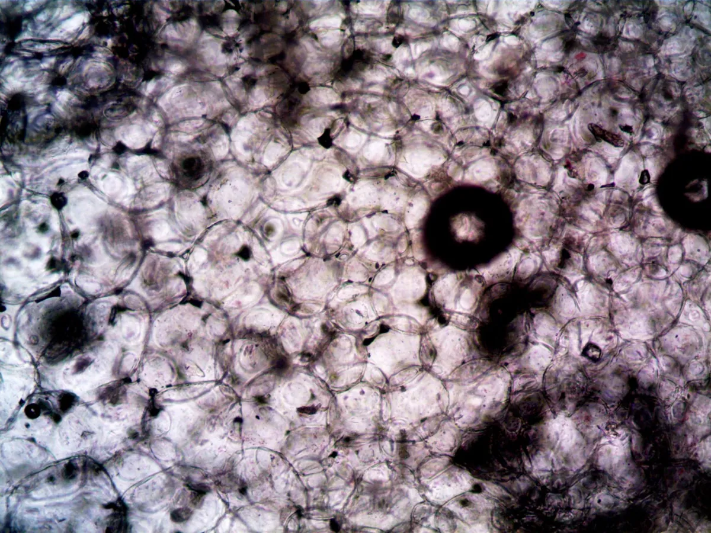

New Compound Melts Fat, Saves Muscle: A Game-Changer?

Key takeaways
- I remember staring in the mirror after yet another restrictive diet, feeling defeated.
- The scale might have budged a little, but my arms felt flabbier, and my energy was in the basement.
- Track what feels sustainable and adjust gradually.
I remember staring in the mirror after yet another restrictive diet, feeling defeated. The scale might have budged a little, but my arms felt flabbier, and my energy was in the basement. It felt like a constant battle: lose weight, lose muscle. That's why the buzz around a new experimental compound that promises to melt fat *without* sacrificing hard-earned muscle has me hooked. Could this be the breakthrough we've all been waiting for? Let's dive into what the science says about this potential game-changer for weight loss and body composition.
For years, the fitness world has grappled with the dilemma of fat loss versus muscle preservation. When you cut calories aggressively, your body often sees muscle as an energy source to burn. This leaves you lighter, sure, but often weaker and with a less toned physique. It’s a frustrating cycle that many of us, myself included, have experienced firsthand. The idea of a compound that could selectively target fat cells while signaling your muscles to stay put feels almost too good to be true.
Early research is pointing towards a class of compounds that might do just that. While still in experimental stages and not yet widely available, these substances are showing fascinating results in preclinical and early human trials. They appear to work by influencing metabolic pathways, essentially telling your body to prioritize burning fat for energy. Imagine your body becoming more efficient at tapping into fat reserves, even when you're not actively exercising. This could be a massive shift from traditional weight loss methods that often lead to muscle wastage.
One of the key mechanisms being explored involves influencing how your body handles energy. Some of these compounds are thought to enhance mitochondrial function, the powerhouses of your cells. Better mitochondrial function means your cells can burn fuel more effectively. This isn't just about burning more calories; it's about burning the *right* kind of fuel – fat. For those of us who’ve put in the hours at the gym, the prospect of protecting our muscle mass while shedding stubborn fat is incredibly appealing. It could mean achieving that toned look faster and more sustainably.
You have to starve yourself and lose muscle to lose significant body fat. There's no way around it; it's a necessary sacrifice.
While calorie deficit is crucial for fat loss, aggressive restriction often leads to muscle loss. However, smart nutrition, adequate protein intake, and resistance training can help preserve muscle. Emerging research suggests compounds might further aid this delicate balance, making the sacrifice less severe.
My own journey has taught me that consistency is king, and finding strategies that support, rather than sabotage, my efforts is key. This is where understanding these new compounds becomes so interesting. They aren't a magic bullet, but they could be a powerful tool in a broader strategy. Think of it as an assist, not a replacement for healthy habits. You still need to eat well and move your body. This compound might simply make the process less punishing and more effective. It could offer a way to navigate those plateaus that always seem to pop up, especially when trying to refine body composition. Check out this related healthy tip for more on sustainable eating.
The science is still evolving, and it's crucial to approach these developments with a healthy dose of skepticism. We're talking about experimental compounds, not FDA-approved medications for general weight loss. The long-term effects and optimal usage are still being studied. However, the potential implications are enormous. For individuals struggling with obesity, or even those looking to achieve a leaner physique after years of effort, this could represent a significant leap forward. It offers hope for a more efficient and less detrimental path to achieving body composition goals. For more on practical approaches, consider this another practical guide.
The 2-Minute Win
Right now, while you're reading this, take a moment to hydrate. Drink a full glass of water. Often, we mistake thirst for hunger, and staying hydrated is a simple, immediate win that supports metabolism and overall health, complementing any future strategies.
I’ve seen so many people get discouraged because they lose weight but feel softer or weaker. This new frontier in metabolic science could change that narrative. It’s about working *with* your body’s natural processes, not against them. Imagine a future where achieving a healthy body composition is less about deprivation and more about smart, targeted support. This aligns with a broader understanding of wellness that I've come to appreciate – one that prioritizes long-term health over quick fixes. For a similar wellness insight, explore this perspective.
Pro-Tip: Don't wait for a miracle compound. Focus on optimizing your protein intake and incorporating progressive resistance training. These are the cornerstones of muscle preservation and fat loss that are scientifically proven and accessible today. They build the foundation upon which future advancements can be layered.
The journey to a healthier body is rarely linear. There are ups and downs, plateaus, and moments of doubt. My personal experience has shown me that the most effective approach involves a combination of consistent effort, informed choices, and a willingness to adapt. This new compound, if proven safe and effective, could become another tool in our arsenal. But it’s vital to remember that it's just one piece of the puzzle. Staying consistent with your overall health plan remains paramount. To help you stay consistent with this, remember why you started.
While the excitement is understandable, it's important to temper expectations. This is cutting-edge research. The path from lab discovery to a widely available, safe, and effective product is long and complex. However, the scientific exploration itself is valuable. It pushes the boundaries of our understanding of human metabolism and opens doors to new therapeutic possibilities. For those interested in the broader landscape, you can explore more weight guides.
Educational only — not medical advice.
Recommended Reading
- Unlock Better Sleep: Quality Sleep Strategies for Optimal Health & Energy
- Unlock a Healthier Weight: 2 Easy Eating Habits Revealed by Science
- Mindful Eating Techniques for Better Digestion and Sustainable Weight Management
More in weight
Slim Down the Vegan Way: Lose Weight Without Counting Calories!
Discover how to Slim Down the Vegan Way: Lose Weight Without Counting Calories! Learn practical tips for a fulfilling lo
Read article → weight
weightThe Hidden Danger: How Belly Fat Amplifies Common Vitamin Deficiencies
Discover how belly fat can worsen common vitamin deficiencies, turning simple issues into major health risks. Learn what
Read article →Related posts
Slim Down the Vegan Way: Lose Weight Without Counting Calories!
Discover how to Slim Down the Vegan Way: Lose Weight Without Counting Calories! Learn practical tips for a fulfilling lo
Read article →weightThe Hidden Danger: How Belly Fat Amplifies Common Vitamin Deficiencies
Discover how belly fat can worsen common vitamin deficiencies, turning simple issues into major health risks. Learn what
Read article → weight
weightOzempic's Brain Breakthrough: Unlocking Your Hidden Craving Center
Discover Ozempic's brain breakthrough: how this diabetes drug is unlocking your hidden craving center and what it means
Read article →